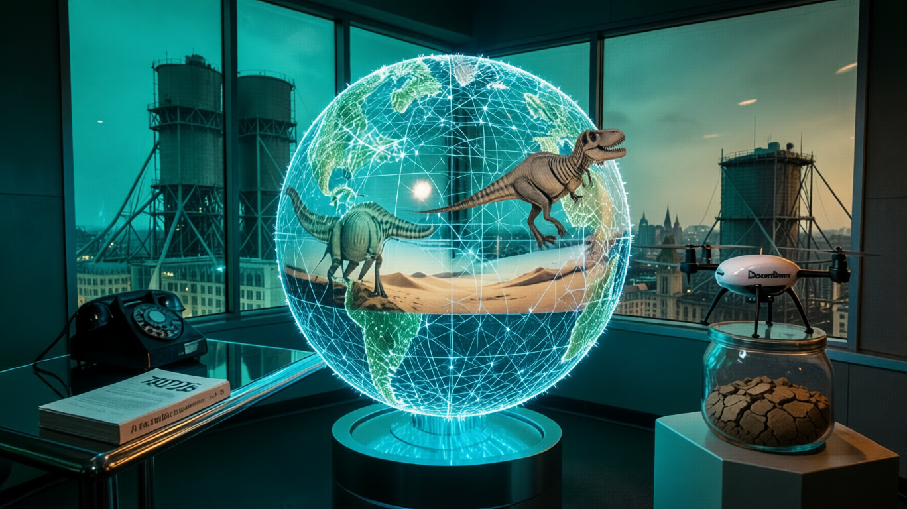

Loading motion…
← Older
Newer →
⏮
Ready to play
⏯
Press play to start the briefing...
Read Source Article
Show Full Transcript
![Patch Notes v2026.31.4-02.50 — A wide 16:9 cinematic shot of a retro-futuristic news studio. In the center, a massive holographic globe made of glowing fiber-optic cables flickers with data streams showing dinosaur skeletons and desert landscapes. To the left, a sleek chrome desk holds a vintage rotary phone and a stack of paper books labeled '2026'. To the right, a hovering drone with DoorDash branding sits on a pedestal next to a glass jar containing dry cracked earth. The lighting is a moody neon teal and amber. In the background, a large window overlooks a futuristic London skyline where massive water towers are draped in industrial scaffolding.](cover.png)